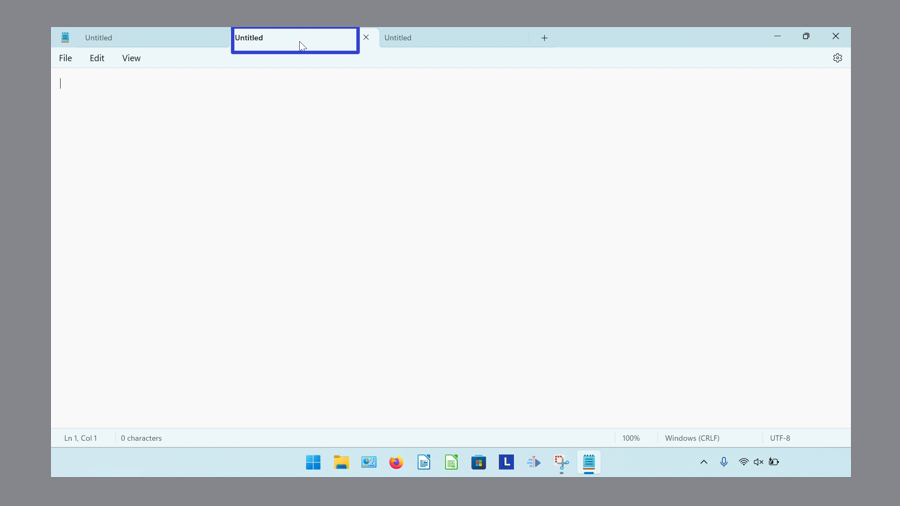

How to Close the Microsoft Notepad App
This tutorial covers:
How to Close a Window:
- With Menu
- With Keyboard Shortcuts
- With Click
- With Right Click
- With Double Click
- With Hover
- With Hover and Right Click
- With Right Click on Taskbar
How to Close All Windows With Menu
How to Close a Tab:
How to Close Tabs:
No time to scroll down? Click through this presentation tutorial:
Follow along with a video tutorial:
How to Close a Window With Menu
- Step 1: First open Notepad. Go to the upper left and click “File”.

- Step 2: In the menu that opens, click “Close window”.
- Step 3: The window closes.

How to Close a Window With Keyboard Shortcuts
- Step 1: Open Notepad. On the keyboard press one of the following:
- Ctrl + W if the Notepad window has only one tab open.
- Ctrl + Shift + W if the Notepad window has multiple tabs open.
- Alt+F4 (or Fn + Alt + F4) if the Notepad window has one or multiple tabs open.
How to Close a Window With Click
- Step 1: First open Notepad. In the upper right corner, click the “Close” or “X” button. The Notepad window closes.
How to Close a Window With Right Click
- Step 1: Open Notepad. Right click the top of the window.

- Step 2: In the menu that opens, click “Close”. The Notepad window closes. FIX !!!!
How to Close a Window With Double Click
- Step 1: First open Notepad. Double click the upper left corner of the window. The Notepad window closes.

How to Close a Window With Hover
- Step 1: Open Notepad. Go down to the taskbar and hover the mouse over the Notepad app icon.

- Step 2: Go to the upper right corner of the small window that appears and click the “Close” or “X” button. The Notepad window closes.

How to Close a Window With Hover and Right Click
- Step 1: Open Notepad. Go down to the taskbar and hover the mouse over the Notepad app icon.
- Step 2: Right click the small window that appears.

- Step 3: In the menu that opens, click “Close”. The Notepad window closes.

How to Close a Window With Right Click on Taskbar
- Step 1: First open Notepad. Go down to the taskbar and right click the Notepad app icon.
- Step 2: In the menu that opens, click “Close window” to close one window, or “Close all windows” to close multiple windows. The windows close.
How to Close All Windows With Menu
- Step 1: Open at least two Notepad windows. In the upper left click “File”.
- Step 2: In the menu that opens, click “Exit”. All the windows close.

How to Close a Tab With Menu
- Step 1: First open a Notepad window with at least two tabs. In the upper left click “File”.
- Step 2: In the menu that opens, click “Close tab”. The current tab closes.
How to Close a Tab With Keyboard Shortcut
- Step 1: Open a Notepad window with at least two tabs. On the keyboard press Ctrl + W. The current tab closes.

How to Close a Tab With Click
- Step 1: First open a Notepad window with at least two tabs. On the right side of the tab, click the “Close” or “X” button. The tab closes.
How to Close a Tab With Right Click
- Step 1: Open a Notepad window with at least two tabs. Right click the current tab.

- Step 2: In the menu that opens, click “Close tab”. The current tab closes.

How to Close Tabs on the Right Side
- Step 1: First open a Notepad window with at least three tabs. Right click the leftmost tab.
- Step 2: In the menu that opens, click “Close tabs to the right”. The other two rightmost tabs close.
How to Close Multiple Tabs
- Step 1: Open a Notepad window with at least three tabs. Right click any tab. 
- Step 2: In the menu that opens, click “Close other tabs”. The other tabs close.
Save a copy of this free tutorial PDF.